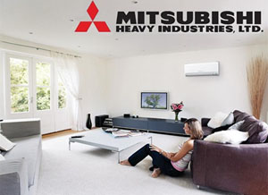

Кондиционеры Mitsubishi Heavy
| Главное техническое управление Mitsubishi Heavy Industries, Ltd. - это сердце мощной системы научных исследований и опытно-конструкторских разработок корпорации. В него входят Центр передовых научно-технических исследований и пять научно-исследовательских центров, находящихся на каждом из ключевых предприятий. Деятельность Центра передовых научно-технических исследований сосредоточена на новейших разработках и технологиях будущего, научно-исследовательские центры в Нагасаки, Такасаго, Хиросиме, Иокогаме и Нагоя занимаются НИОКР (научно-исследовательские и опытно-конструкторские работы), которые тесно связаны с конкретными технологиями и потребностями предприятий. |  |
Кондиционеры Mitsubishi Heavy серия HotRodS R410A
SRK20ZJX-S HR, SRK25ZJX-S HR, SRK35ZJX-S HR
Функциональность кондиционеров Mitsubishi Heavy Industries, Ltd.
 |
Автоматический выбор между обогревом, охлаждением или сушкой. |
 |
В любом режиме работы выбирается оптимальный угол расположения жалюзи. |
 |
При отключении питания кондиционера, функция автоматического рестарта сохраняет настройки работы кондиционера, действовавшие непосредственно перед отключением питания, а после восстановления питания автоматически возобновляет работу системы с сохраненными настройками. |
 |
Панель забора внутреннего воздуха легко открывается и закрывается. Панель, закрывающая отверстие для всасываемого воздуха, также является съемной. |
 |
При работе в данном режиме кондиционер будет не только охлаждать воздух, но и эффективно осушать его в дождливые дни. |
 |
Работая в этом режиме, кондиционер экономит электроэнергию, при этом работа остается достаточно эффективной. |
 |
Эффективное уничтожение спор плесени и болезнетворных бактерий. |
| Режим работы и температура определяются автоматически с применением нечеткой логики. Частота инвертора изменяется соответствующим образом. | |
 |
Этот режим удобен, если вы желаете быстро достичь нужной температуры. Кондиционер может работать в интенсивном режиме без перерыва в течение 15 минут. |
 |
В этом режиме происходит автоматическое удаление инея с кондиционера. Он позволяет избежать излишней работы кондиционера в других режимах. |
 |
Качающиеся жалюзи могут быть остановлены под любым углом. После повторного включения жалюзи возвращаются к сохраненной позиции. |
 |
Вы можете установить время выключения кондиционера. |
 |
Устанавливая таймер включения и выключения кондиционера, можно задать две операции по таймеру в день. После установки таймеры будут включать и выключать систему в нужное время каждый день. |
 |
Функция встроенного интеллекта позволяет включить кондиционер за некоторое время до заданного, так, что в установленное время температура уже достигнет желаемого значения. Этот режим включается кнопкой ON TIMER (только для режимов охлаждения и обогрева). |
 |
В случае неисправной работы кондиционера управляющий им микроконтроллер автоматически запускает функцию самодиагностики. Обследование кондиционера и его ремонт должны проводиться авторизованными дилерами. |
 |
Режим сверхтихой работы кондиционера. |
 |
Эффективное дезодорирование воздуха. Для восстановления функций достаточно фильтр промыть водой и высушить на солнце. |
 |
При качании жалюзи можно настроить на любой угол от 0° до 90°. |
 |
На основном блоке имеется резервный выключатель. С его помощью можно включать и выключать кондиционер, если использование ПДУ по какой-либо причине невозможно. |
 |
Турмалиновое покрытие элементов блока генерирует отрицательные ионы 24 часа в сутки. При включенном и выключенном кондиционере. Исключает в помещении сквозняки за счёт создания равномерного температурного фона |